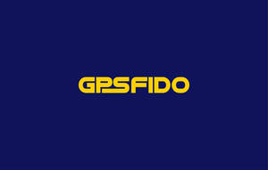

Trade Mark Journal No.2025/042 17 October 2025
UK00004273058 2 October 2025 (9,21)

- Class 9
- Camera lenses; Camera lens mounts; Camera lens adapters; Cameras; Camera straps; Camera filters; Lenses for video cameras; Camera casings; Camera hoods; Photographic cameras; Zoom lenses for cameras; Camera stands; Video cameras; Mirrorless cameras; Camera covers; 35mm cameras; Lenses for cameras; Camera closures; Camera cases; Motion-activated cameras; Digital video cameras; Digital cameras; Motion picture cameras; 360º video cameras; 360º cameras; View cameras; Waterproof camera cases; Action cameras; Bags for cameras and photographic equipment; Camera containing a linear image sensor; High-speed cameras; Thermal imaging cameras; Interface circuits for video cameras; GPS software; GPS transmitters; Wearable activity trackers; Computer software for Global Positioning Systems (GPS); Personnel tracking devices; Computer software for mobile phones; Electronic tracking apparatus and instruments; GPS receivers; Software for GPS navigation; GPS navigation devices; Computer software for cellular phones.
- Class 21
- Electronic pet feeders; Automatic pet feeders; Animal-activated pet feeders; Pet feeding bowls; Pet feeding dishes; Pet feeding bowls, automatic; Pet feeding and drinking bowls; Food containers for pet animals; Non-mechanized pet waterers in the nature of portable water and fluid dispensers for pets; Pet drinking bowls.
GPSFIDO LTD